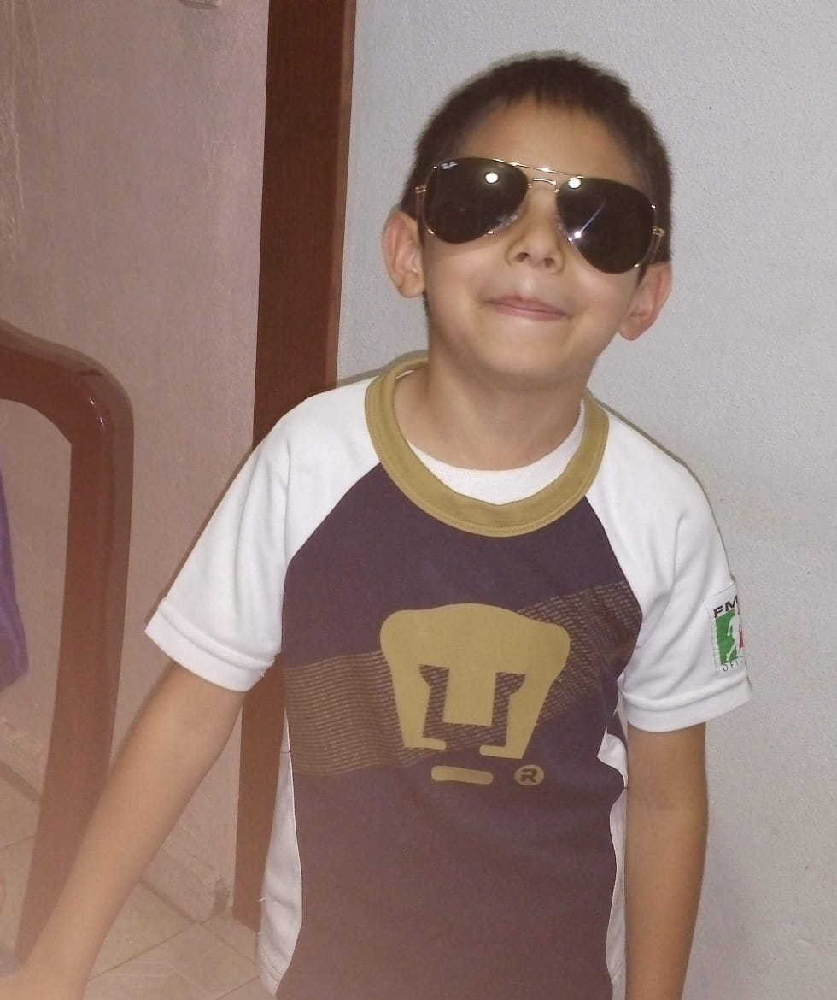

Soy César Vélez Medel un adolescente de 17 años que vive en Puebla. Me considero alguien muy amigable y risueño, con mis amigos soy alguien muy alegre, mientras que con mi familia soy un poco mas reservado. Me gusta mucho el futbol, es mi deporte favorito y a la mayoria de mi familia le gusta, mi quipo favorito son los pumas en la liga MX, normalmente no me pierdo ningun partido. Ademas de ver futbol tambien lo practico, juego los fines de semana y me divierto mucho. Otra de las cosas que me divierten mucho es jugar con mi hermano, normalmente jugamos con sus peluches,en algun videojuego o con cualquier cosa que inventemos. Tambien disfruto el escuchar musica, tengo gustos musicales muy variados y no puedo estar un dia sin escuchar algo que me entretenga, motive o me relaje. De chiquito me gustaban mucho ver caricaturas sobre dinosaurios, los cuales me fascinaban, e incluso a día de hoy conservo los juguetes y libros que me compraron mis papas sobres el tema. Me aprendi varios nombres e incluso a dia de hoy los recuerdo, actualmente me siguen gustando pero he perdido un poco el interes en ellos.
